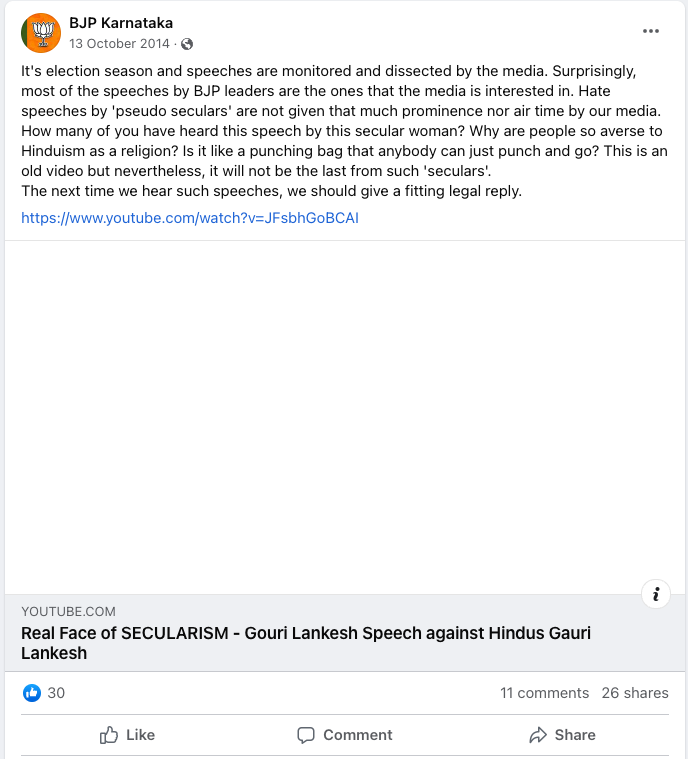
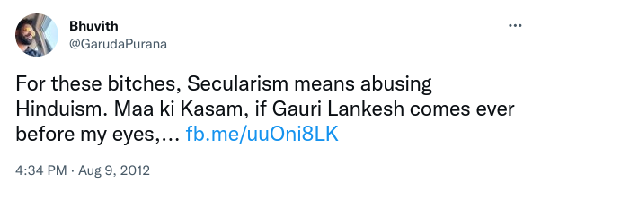

Gauri Lankesh, an outspoken journalist from Bangalore who was critical of right-wing Hindu extremism, was murdered by three gunmen outside her home on Sept. 5, 2017. One of the men who admitted to murdering her said he did so to “save his religion.”
The officials charged with investigating her murder found a video from YouTube downloaded onto one of the murderers’ laptops. Local police sources said the video, which features a five-minute excerpt of a 30-minute speech in which Lankesh discusses the plurality of Hinduism, was one element in a “gradual indoctrination” process.
In support of Forbidden Stories’ investigation into this fatal attack, Digital Witness Lab investigated the spread this video on social media. Our goal was to gauge the role the video played in fueling the right-wing Hindu animosity towards her that ultimately lead to her murder.
We found that the video had been shared on Facebook, YouTube and Twitter prior to her murder. As of writing, the video has received more than 130 million interactions on Facebook and more than 250,000 views on YouTube. We also found instances of the video being shared by right-wing activists on Twitter and the BJP Karnataka’s Facebook page before Lankesh was murdered, though public interaction with those posts was low.
Twitter was a less popular platform for engaging with the video, though there were several instances of the video being tweeted before her death, such as when posts related to Lankesh went viral on social media or when she appeared in the news.
Read the Forbidden Stories investigation. [TK LINK]
Forbidden Stories found four copies of the Lankesh video on YouTube, the most popular of them had the title “Real Face of SECULARISM,”. Two of the videos were uploaded prior to Lankesh’s murder. To understand how they spread on social media prior to the murder, we investigated how it was shared on YouTube, Facebook and Twitter.
First, to get a sense of how many copies of this video had been circulated, we turned to YouTube, which is the most common platform for video sharing and where we knew copies of this video existed. As of this writing, searching for the video on YouTube using Gauri Lankesh and “Real Face of SECULARISM” returns only one relevant result that was uploaded after her murder, even though we have evidence of other copies of this video being available on the platform with similar titles. The earliest copy, found by Forbidden Stories, was uploaded on Aug. 8, 2012. Records of this YouTube link on Internet Archive show the video was viewed more than 250,000 times before it was taken down, sometime between 2019 and 2021. YouTube did not respond to our request for information about the video or the accounts that previously uploaded the content.
Fig: Screenshot of the earliest Internet Archive capture of the video titled “Real Face of SECULARISM – Gouri Lankesh Speech against Hindus” with YouTube id JFsbhGoBCAI.
To discover videos that may have been removed from YouTube, we queried the Internet Archive’s YouTube metadata dataset, which consists of 1.1 TB of metadata on 1.4 billion YouTube videos from February 2019.
We searched through the data looking for:
Videos that contained Lankesh’s name and the terms ‘real’, ‘face’ and ‘secularism’ in that order
Videos that contained the words ‘lankesh’, ‘hindu’ and ‘hate’ in any order
Videos that were the same length as the first video or were between 300 and 328 seconds
This search resulted in 3374 matches with 95 videos matching at least two search criteria.
After manually reviewing these results, we narrowed them down to eight matches. Four of these matched the videos that Forbidden Stories had identified in their reporting; an additional four had not yet been found. Of the eight videos, four have been taken down and six were uploaded after her death. It is possible that there were other copies of this video that were not surfaced by our search criteria.
The oldest video, from Aug. 8, 2012 (id JFsbhGoBCAI), made up 90% of views across all eight videos. If these numbers are accurate and this copy had the greatest number of views, it means the video did not spread very widely on YouTube.
To get a better understanding of how these videos were shared across the web, we turned to Facebook, which is very popular in India.
For our analysis into the spread of the “Real Face of Secularism” video on Facebook, we used CrowdTangle, a tool provided by Facebook that shows how content is interacted with on the platform, to see how each of the eight YouTube video URLs listed above was disseminated on Facebook.
Of the four videos that had been taken down on YouTube by 2019, three received more than 113 million Facebook interactions each. Like on YouTube, the most popular of these was the oldest video that was uploaded on Aug. 8, 2012, with id JFsbhGoBCAI. Collectively, posts that referenced this video garnered more than 30 million reactions, 6.5 million comments and 76 million shares, according to CrowdTangle.
Even though the video’s Facebook activity metrics were in the millions, the tool only surfaced three public Facebook posts that linked to it, which doesn’t add up on the surface. But, according to CrowdTangle, Facebook Activity metrics include aggregated data from all public and private Facebook posts that reference a particular URL. Based on this, our hypothesis is that Facebook has likely taken down most of the posts that shared this video, and many of the shares likely happened in private posts that CrowdTangle does not display. We also found that two of the videos with millions of interactions had the exact same metrics, raising the possibility that CrowdTangle might be using the same metric counts for two distinct copies of the video.
Fig: Screenshot of CrowdTangle interface showing engagement metrics for the video that was uploaded to YouTube on Aug. 8, 2012.
Of the three public posts that link to this video that are still surfaced by CrowdTangle, only one of them is from before Lankesh’s attack. That post was shared by the official BJP Karnataka page on Oct. 13, 2014 and can still be viewed as of this writing. It had limited engagement, with only 11 comments, 26 shares and 30 likes.

Fig: Screenshot of the BJP Karnataka page’s post from 2014 that links to the Aug. 8, 2012 video.
Since a vast quantity of the interactions with the video took place in private posts or public posts that have since been taken down, the precise number of views this video received is hard to measure.
Next, we looked to see what the spread looked like on Twitter.
To understand how the “Real Face of Secularism” video was shared on Twitter, we used the Twitter API to search for links to any YouTube videos, Facebook posts, and news articles that mentioned Lankesh, as well as links to any of the eight instances of the YouTube video, posted between early 2006 and the end of 2022. Unlike Facebook, the volume was low. There remain around 486 tweets from that entire period, a third of which were posted before her assassination.
The video first appeared in a Tweet by user GarudaPurana on Aug. 9, 2012. The Tweet links to the oldest video uploaded to YouTube with id JFsbhGoBCAI and was posted one day after the video was uploaded. The link is from a domain belonging to Facebook, indicating that the user shared the video from there.

Fig: Screenshot of the first tweet to link to the video on twitter
The @GarudaPurana account belongs to Bhuvith Shetty, a known Bajrang Dal activist who was arrested in 2015 for a tweet linked to the murder of Kannada scholar M. M. Kalburg and was again arrested later that year for his alleged involvement in the killing of Harish Poojary, a 28-year-old Hindu. In 2015 he also started a change.org petition seeking the arrest of Lankesh for “hurting religious sentiments,” which amassed 587 signatures as of the time of writing.
Along with Shetty, there were other users who would periodically resurface the video. While most of the tweets surfaced in our search were posted right after Lankesh’s death, there are several instances of the video being shared before her death, such as when posts about her went viral on social media or when she appeared in the news.
| Label | Description |
|---|---|
| First reference of YT video | First tweet containing a reference to the “Real Face of Secularism” video |
| Lankesh on @headlinestoday | Lankesh appeared on @headlinestoday and there was controversy around her appearance |
| Newsxonline appearance | Lankesh appeared on @newsxonline and there was controversy around her appearance |
| FB Post + Petition | Lankesh wrote a Facebook post that was considered critical of Hinduism, which sparked controversy and led to a change.org petition against her |
| DK Ravi Suicide | Lankesh wrote an article about D.K. Ravi’s suicide. Though the article was generally well-received, trolls still found a way to be critical of it |
| Tight Slap | Lankesh got into a Facebook argument with D.P. Satish, which was screenshotted and shared |
| Defamation Case | Lankesh was tried and convicted of defamation |
| Assassination | Lankesh was assassinated |
Table: Description of labels in the above graph
Before her assassination, most of the activity on Twitter related to Lankesh and the “Real Face of Secularism” videos came from users with low follower counts who aren’t very active on the platform. This suggests Twitter didn’t contribute significantly to the spread of this video outside of some echo chambers.
Our estimations for the view counts on YouTube are based on publicly available historical YouTube data. The dataset we used contains metadata on 1.4 billion videos collected in February 2019. While this is certainly a large dataset, it is unclear what proportion it represents of all YouTube videos online at the time. We do know it is an incomplete dataset because two of the original four videos found by Forbidden Stories are not listed in it, even though the videos were live in February 2019.
In addition to the dataset itself being incomplete, our search of the dataset could have similarly been incomplete. While we found four additional videos using various search heuristics, there may be other videos that our query did not match. This could happen, for example, if the titles of the videos significantly changed or if the duration of the videos were changed to add commentary.
Similarly, it is also possible there were other copies of this video that had already been taken down before February 2019. For these reasons, the numbers we present in this report could under-count the actual number of times this video was viewed on YouTube. It is also possible that there were copies of the video that had been directly uploaded to Facebook or Twitter. We couldn’t find any instances of such videos.
The Twitter search results we used may have been incomplete in catching all references to Lankesh on the platform. We experimented with very targeted queries, looking specifically for content that was known to be antagonistic towards Lankesh, as well as very general terms, searching for any references to her name. However, many references to her could have been made through nicknames or pejoratives that would be difficult to untangle from unrelated conversations on the platform. In addition, we do not have any insight into tweets that have been deleted or taken down by the platform.
We relied on CrowdTangle to measure the engagement this video got on Facebook. Currently, this is the only way to calculate the interaction and sharing metrics of content posted to the platform. While an incredibly useful tool, it has some limitations from the perspective of this analysis. The tool does not provide information on posts that have been removed from the platform, meaning we can’t tell how many of the interactions took place in private posts vs. public posts that have been taken down.
Secondly, because we do not have aggregated time series data for the interactions, we cannot tell what proportions of the interactions reported by CrowdTangle took place before her death.
Thirdly, there is a lack of clarity on how these numbers are calculated. As stated in the FAQs page of the platform: “As for the top Facebook Interactions section, treat it as a reasonable estimate (in most cases) that can be directionally helpful, but whose numbers we don't control and can't guarantee.” It also states that those numbers are not only from public posts, but even include shares via Messenger.
An important component missing from our investigation is how this video spread on WhatsApp. Given the popularity of the platform in India, it is likely it played a significant role in the spread of this video. However, because of the peer-to-peer nature of the platform and lack of any publicly available tools to measure what spreads on the it, it was not possible of us to investigate this retroactively.
Conclusion
Using the Internet Archive team’s YouTube Metadata Collection, we found eight copies of the “Real Face of Secularism” video in total, two of which had been uploaded to YouTube before Lankesh’s murder. The oldest video was by far the most popular and had been viewed more than 250,000 times on the platform by April 2019.
We determined the spread of all eight YouTube videos on Facebook using CrowdTangle. Three of the eight videos had more than a million interactions on Facebook, including the video from Aug. 8, 2012. That video was also shared by BJP Karnataka’s official Facebook page in 2014, three years before she was murdered.
Most of the activity on Twitter related to Lankesh and the “Real Face of Secularism” videos was carried out by users with low follower counts who aren’t very active on the platform. This suggests Twitter didn’t contribute significantly to the spread of this video outside of some echo chambers. Even though the activity was low-volume, the data does provide some insight into the community in which it was shared. The original video was shared by a known Bajrang Dal leader on Aug. 9, 2012, just one day after it had been uploaded. That same leader was later arrested for inciting hate and accused of murder.
Lack of adequate visibility into the platforms prevented us from capturing a complete picture of the spread of this video.
Contributing Editor Klaudia Jazwinska